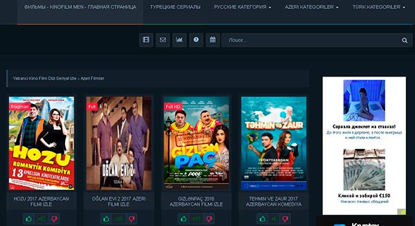
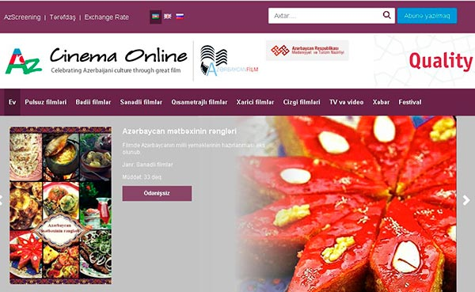

Azerbaycan filmleri təqdim edən saytlar
İndiyə kimi dövlətimizin üç mindən çox kinoları çəkilmişdir.
Bu filmlərin kateqoriyalarından, üç yüzə qədəri uzun metrajlı, yüzdən çoxunu qısa metrajlı, ona qədəri uzun metrajlı musiqili filmləri, əlliyə qədər teatr oyunu və iyirmiyə qədər multfilmləri göstərmək olar.
Azerbaycan filmleridəki tarix qədimdir. Əgər siz bu kinolara baxmaq çün sayt axtarışındasınızsa, deməli doğru ünvandasız.
Burda Azerbaycan filmlerini nümayiş etdirən ən yaxşı saytlarını, qarşınıza qoyuruq.
Həmin saytlar diqqətlə araşdırılmış, keyfiyyətliliklərinə, rahatçılıqlarına görə sizlər üçün seçilmişdir.
Gəlin bu saytlarla tanış olaq:
Kinoflim-men
Kinofilm-men onlay kino portalı, kinoların rahatlıqlam seçilməsi, kateqoriyalara görə naviqasiyası baxımından çox keyfiyyətlişəkildə dizayn edilmişdir.
Saytın yuxarı bölməsində əsasən dörd kateqoriya verilmişdir. Türk serialları, rus kateqoriyası, ayrıja türk dublyajı kateqoriyası və ən əsasıda milli kinolarımızı seçmək üçün azerbaycan filmlerinə, kateqoriyasına bölünmüşdür.
Dörd kateqoriya demeyimizə baxmayın, bu sizə az gəlməsin. Çünki rus, türk kateqoriyaları dedikdə, bura dünya filmlərinin, hind, amerikan, avropa kinolarının bu dillərdəki dublyajları nəzərdə tutulur.
Həmçinin də, ümumən bütün filmlərin sayını gözünüzün qarşısına gətirmək üçün, 500- dən artıq səhifəni və hər səhifədə 5-6 kinonu düşünün. Kinofilm-men portalı da digər bu mövzudakı saytlar kimi tez-tez yenilənir, və ən tezə çıxan kinoları burda izləyə bilərsiz. Azerbaycan filmleri də öz adına uyğun kateqoriyada yerləşdirilmişdir.
Burada köhnə filmlərimizdən tutmuş, son müasir kinolarımıza kimi mövcuddur.
Kinolar bir yana qalsın Azərbaycan verlişdlərinə də baxa bilərsiz. Bu kateqoriyada həmçinin dünya filmlərinin (hind, amerikan, rus, avropa) azərbaycan dublyajına da baxa bilərsiz.
Bakulife
Bakulife–kino portalı da bu sahədə çox yaxşı saytlardan biridir.
Bütün filmlər, digər portallarda olduğu kimi kataloqlara, kateqoriyaya bölünmüşdür.
Azərbaycan filmlerini, seçmək və rahat şəkildə baxmaq üçün, səhifənin yuxarı sağ küncündə “KATEQORİYALAR” bölməsinə daxil olmaq lazımdır.
Burada filmlərin, janrlarına uyğun olaraq bölgüsünü görəcəksiz.
Məsələn Köhnə Azərbaycan filmlerinin, Azəri komediya və yaxud ümumən milli kinolarımız kimi kataloqlar.
Həmçinin də dizilər keyfiyyətli formatda səhifələrə yerləşdirilmişdir.
Bakulife-nin nə qədər sizin istəklərinizi doğruldacaq rotal olmasını, siz bu sayta daxil olmaqla, özünüz dəyərləndirə bilərsiz.
Ümidvarıq ki, tələblərinizə münasib olacaq.
Myvideo
Azerbaycan filmlerinin ən geniş şəkildə təqdim olunduğu protalardan biri MYVİDEOAZ saytıdır.
Burda yalnız milli kinolarımız deyil, həmçinində beynəlxalq filmlər də mövcuddur.
Kinolarımıza baxmaq üçün, sol tərəfdə kateqoriyalar bölməsinə daxil olmaq və Azərbaycan sözünün üzərinə basmaq lazımdır.
Açılan səhifədə yalnız kinolar deyil, seriallar da mövcuddur.
Bu portal 2016-cı ildən fəaliyyət göstərir və keyfiyyətli təqdimatı ilə, geniş izləyici kütləsini özünə cəlb edə bilmişdir.
Bir özəlliyi də qeyd etmədən, keçə bilmərik. Tv bölməsinə daxil olmaqla kanallarımıza canlı şəkildə baxmaq mümkündür.
İstər Aztv, ictimai kanal, idman kanalı, atv, space və digər bu kimi kanalları, televizoru achmadan, bir başa internetdən bu portaldan tamaşa edə bilərsiz.
Yəni milli kanallarımızdan canlı şəkildə, azerbaycan filmleri bir başa izləyə bilərsiz.
Azcinemaonline
Azcinema proyekti əsasən pullu proyekt sayılır.
Lakin pulsuz izləmək üçün də bəzi kinolar ayrıca bu bölməyə əlavə edilmişdir.
Pullu proyekt olmasına baxmayaraq, həddindən çox media faylları özündə toplamışdır.
Demək olar ki bütün azerbaycan filmleri bu saytda mövcuddur.
Yaxşı olar ki, azcinemada aylıq abunə olasız və abunəliyə uyğun olaraq, bütün videolara tamaşa etmək mümkün olacaqdır.
Bu daha sərfəli həm də çox münasib qiymətə başa gəlir.
Abunə olmaq üçün, seçdiyini filmə baxmaq üçün daxil olduğunuz səhifədə, icarələmək düyməsinə basırsız. İcarələmənin qiyməti, 30 gün müddətinə 3.99 manata başa gəlir.
Azerbaycan filmleri, rahat izləmək üçün 4 manata başa gələn bu icarə, çox sərfəlidir.
Deməli, bu proyekt sizə filmlərini pulla təklif edirsə, o zaman, yəqin bu filmlər xüsusi təqdimat üçün hazırlanmış və böyük ehtimal keyfiyyət baxımından, digər proyektlərdən fərqli olacaqdıdr.
Azerbaycan filmlerinin tarixi. 1-ci hissə
Azerbaycan filmleri, öz başlanğıcını 1890-cu illərdən götürür. Birinci kinolardan misal olaraq, fotoqraf mişonun, Bakı neft yataqlarında hazırladığı bədii kinosujetlər olmuşdur. Bu filmlərə misal olaraq, İlişdin, Şəhər bağında xalq gəzintisi kimiçəkilmiş əsərləri göstərmək olar.
1915 -ci ildə Rusiyadan dəvət olunmuş, Boris Svetlov tərəfindən, "Neft və milyonlar səltənətində" adlı bədii film çəkilmişdir. Bu işin təşəbbüskarları Pirone qardaşları cəmiyyəti olmuşdur. Filmdə Hüseyn Ərəblinski kimi aktyorlar iştirak etmişdir. Artıq 1916-cı ildə hamımızın ən sevimli Azərbaycan filmlərindən olan "Arşınmalalan" kinosu çəkilmişdir. Əsər Uzeyr Hacıbayovun operattası əsasında lərzəyə gəlmişdir. Kino tariximiz bu dövrlərdə də zəngindir, 1919-cu ildə də ilk müstəqilliyimizin şərəfinə "Təntənə" filmi də çəkilir.
Çatdıq 20-ci illərə, bu vaxtdan başlayaraq Azərbaycan Foto Kino İdarəsi yaradılır. AFKİ təşkilatə tərəfində 1924-cü ildə Qız qalası əfsanəsi kinosu ekrana verilir. 1925-ci ildə Azrbaycan Foto Kino İdarəsinin tərkibində, Şamil Mahmudbəyov tərəfindən, rejisor və aktyorların hazırlanması üçün şöbə təşkil edilir. Kinomuzun inkişaf edirilməsi məqsədilə, Azərbaycana, Nikolay Şengelaya, Vselov Puduvkin kimi rejisorlar çağrılmışdır. Həmçinində bu zamanlarda, Yevgeni Şnayder, İvan Forolov və digər kino-operatorlar da gəlmişlər. Sonralar bu təşkilatı adı dəyişərək, müxtəlif formalarda tanınmışdır. Az-Dövlət-Kino, Azər-Kino, Az-Film, hamısının adını qeyd etmirəm, sonda AzerbaycanFilm adlanır.
Ümumiyyətlə 1920-cillər Azerbaycan filmleri, mövzu baxımında cəhalətə qarşı mübarizə üzərində fəaliyyət göstərmişdir. Bunun belə olduğunu, Bismilləh, Hacı-Qara kimi filmlərdən görmək olar. Sevil kinosu da bu dövrün əsərlərindəndir. Mirzə Şərifzadə 1925-ci ildə Azərbaycana səyahət filmini yaradır.
Kino tariximizin ilk dövrlərindən danışdıq. Mövzunun ardı var gözləyin, qarşıda 2-ci hissə ilə davam edəcəyik. Yeni hissə 06.01.2018 səhifəmizə yerləşdiriləcək.